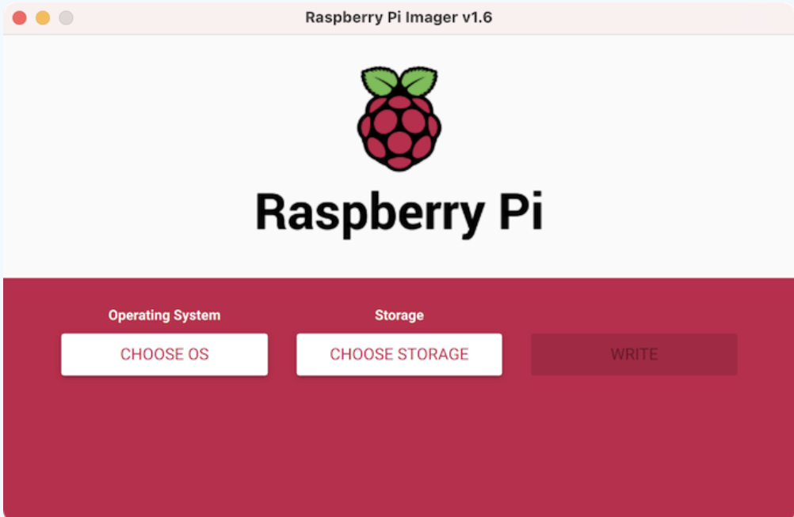

Bootstrap
To set up a Raspberry Pi, a librarian first needs to install the Raspbian OS onto a microSD card, and then they need to run our bootstrap script.
Installing the OS
x

To setup the Raspberry Pi, we first ask the user to download the Raspberry Pi Imager. This is a free and open tool for Mac, Windows, and Linux that aids in the creation of microSD cards for the Pi.
The imaging tool allows the user to select their operating system (there are multiple options), and then install it on a microSD card plugged into their computer. It is free, open, reliable, and makes it very easy to set up the "boot disk" for the Raspberry Pi.
Running the bootstrap
The bootstrap is a bash script that does three things:
- The bootstrap runs
input-initial-configuration. This is agoprogram 18F developed to:- Read in the api.data.gov access token.
- Read in the FCFS Seq Id for the library where the Pi is deployed.
- Read in a hardware identification tag that helps the librarian know where the device is installed (eg. "reference desk").
- The bootstrap makes sure
gitis installed. - It installs the most recent version of
ansiblefrom the official Ansible PPA. - It pulls the
imls-client-pi-playbookrepository and runs the ansible playbook contained therein.
The librarian runs the bootstrap by opening a terminal and pasting in a command that looks like bash <(curl -s ...), where the URL is to a file in a Github repository. This downloads the script and executes it.
Not only is the bootstrap never used again, it is not possible to use the bootstrap a second time, as we will explain while discussing the playbook.
About the bootstrap
We considered multiple paths to bootstrapping a Raspberry Pi.
- There are custom IoT operating systems that can be used or licensed. For a pilot, this was not a path we wanted to explore. These often have specific packaging and signing requirements, and further, we were not confident that a librarian (working unsupported) could actually configure a device running one of these operating systems.
- We considered building a custom Raspbian image that "baked in" the setup scripts. However, there was always the problem of getting an api.data.gov key onto the device. Either a librarian had to boot the Pi and enter the key, or some kind of tricky "name your keyfile this and save it on a USB stick called this" would have been necessary. This is what led us to our final approach, which was...
- Use the stock operating system image. This is the image that has the highest probability of being up-to-date, most secure, and most easily used as a "fixed point" in our configuration. It has the best support for installation (the imager "just works"), and the bootstrap script becomes a single-line copy-paste instruction to the librarian.
If we were scaling, we could consider other approaches, but the questions would be come:
- Is another approach easier for the user?
- Is another approach less error prone for the user?
- Is another approach more secure for the user?
and each of these questions (and others) would have to be held in balance with each-other. We believe our bootstrap solution is simple, reasonably secure, and able to be carried out by a wide range of users.